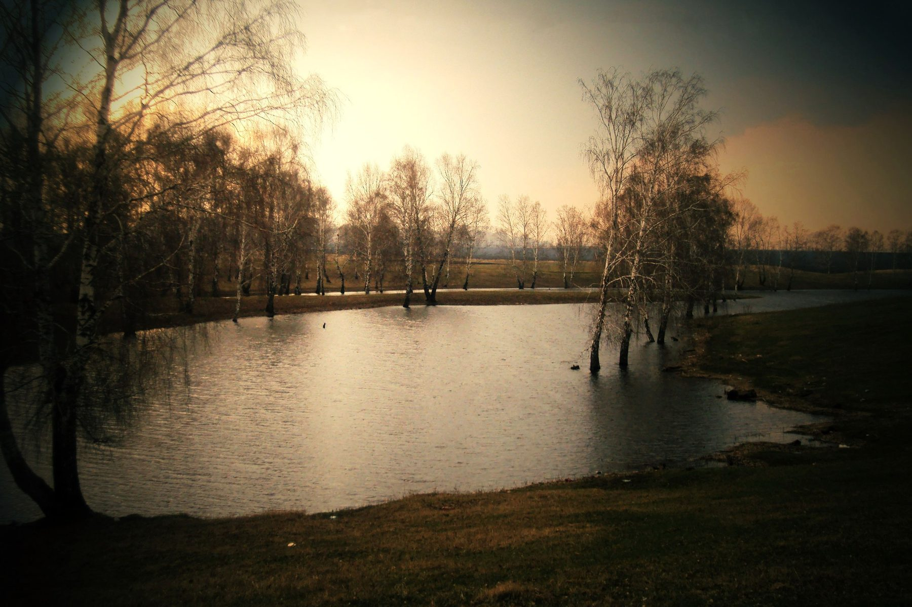

Скважина в Ленинске-Кузнецком: откуда берётся расчёт глубины
«Пробурим, пока не найдём» — плохая стратегия, которую оплачивает заказчик. Разбираем, на какие данные опирается инженер до выезда: фондовые материалы, госмониторинг недр, паспорта соседних скважин.
«Пробурим и посмотрим, где найдём воду» — фраза, которая должна насторожить, а не успокоить. Каждый лишний метр проходки стоит денег заказчика, и подрядчик, который называет интервал глубины наугад, просто перекладывает на него риск собственной неподготовленности. У обоснованного расчёта есть источники — не гадание, а конкретные данные, с которыми инженер работает до того, как техника вообще выехала на участок. Разбираем, что это за данные и как их можно проверить.

Фото: Alena Kiseleva, CC BY-SA 4.0, Викисклад. Кадрировано.Фондовые геологические материалы и государственный мониторинг недр
Первый источник — архивные геологические материалы по территории: результаты прежних изысканий, разведочного и эксплуатационного бурения, накопленные за десятилетия работы геологических организаций в регионе. Это не общедоступная база, которую можно за минуту открыть в браузере, а фонды, которые ведут профильные организации, — но по ним складывается представление о том, как устроены недра конкретного района, а не только «региона в целом».
Отдельно от архивных материалов работает действующий государственный мониторинг состояния недр — его для Сибирского федерального округа, включая Кемеровскую область, ведёт Сибирский региональный центр государственного мониторинга состояния недр (Роснедра). Это не архив на полке, а обновляемая система: по её данным можно увидеть, например, что балансовые запасы подземных вод для хозяйственно-питьевого и технического водоснабжения по Кемеровской области на начало 2024 года составляли 1 414,766 тыс. м³/сут, степень освоения этих запасов — 11,2 %, а разведанность прогнозных ресурсов — 18,7 %, самый высокий показатель в Сибирском федеральном округе. Эти цифры описывают ситуацию по области в целом, а не конкретно по Ленинску-Кузнецкому, но они дают инженеру исходную картину: насколько территория вообще изучена и насколько плотно она покрыта данными, на которые можно опереться при планировании конкретной скважины.
Паспорта ранее пробуренных скважин в районе
Второй источник — куда более локальный: паспорта скважин, пробуренных ранее рядом с конкретным участком. В паспорте фиксируются вскрытые горизонты, фактическая глубина, замеренный дебит и конструкция — то есть не предположение, а результат уже состоявшейся проходки по соседству. Для инженера это самый прямой и конкретный ориентир: если в паспорте соседней скважины на этой же улице вода зафиксирована на определённой глубине определённого горизонта, вероятность повторить похожий результат заметно выше, чем при работе с одной только региональной картиной.
Здесь важна честная оговорка. Закон РФ «О недрах» (ст. 19) освобождает от лицензирования и, соответственно, от обязательного геологического изучения добычу подземных вод для собственных нужд — при условии, что объём не превышает 100 м³/сут, вскрытый горизонт не служит источником централизованного водоснабжения и не покрыт им сверху, а вода расходуется на личные, бытовые нужды. Большинство бытовых скважин на частных участках подпадает именно под эти условия — и значит, формальной обязанности сдавать паспорт такой скважины в государственный фонд геологической информации у владельца, как правило, нет. На практике это означает, что «паспорта соседних скважин», на которые опирается инженер, чаще всего — архив самого подрядчика по собственным прошлым объектам в районе, а не единый публичный реестр, который можно запросить со стороны. Это не делает данные менее полезными, но объясняет, почему у разных буровых компаний в одном и том же районе может быть разный объём накопленной информации.
Гидрогеологическое районирование и что оно даёт
Третий источник — не точечный, а структурный: гидрогеологическое районирование территории. Ленинск-Кузнецкий по этому районированию попадает в Кузнецкий межгорный артезианский бассейн — толщу угленосных осадочных пород, где вода заполняет поры и трещины песчаников, алевролитов и самих угольных пластов. Это принципиально иное устройство недр, чем, например, в Горной Шории или на Салаирском кряже, где работает совсем другая, скальная гидрогеология; подробный разбор структуры территории и того, почему глубина везде разная, — в статье на какую глубину бурить на юге Кузбасса.
Районирование не даёт готовой цифры глубины для конкретного участка — оно задаёт диапазон возможного: примерную мощность обводнённой трещиноватой зоны, характерные для бассейна дебиты, типичный природный фон качества воды. Это фильтр ожиданий, который отсекает заведомо нереалистичные варианты, а не замена фактического разреза, который покажет сама проходка.
Почему «народные методы» поиска воды — не данные
Отдельно стоит сказать прямо про лозоходство и похожие способы «определить, где копать» — рамку, веточку, маятник над картой участка. У этих методов нет проверяемого физического механизма, который связывал бы их результат с реальным залеганием воды, и нет накопленной, поддающейся проверке статистики точности. Это не значит, что человек, который так работает, действует недобросовестно, — чаще это просто унаследованная традиция, а не метод, сопоставимый по надёжности с архивными материалами, паспортами соседних скважин или районированием.
Разница здесь принципиальная, а не в степени доверия: фондовые материалы, государственный мониторинг и паспорта скважин — это данные, накопленные наблюдением и измерением, которые можно перепроверить и на которые можно сослаться. У «народных методов» такой проверяемой основы нет — и вопрос не в том, работают они или нет в конкретном случае, а в том, что перед бурением у заказчика нет способа отличить удачное совпадение от системного метода.
Зона влияния оросительных систем и что по ней известно
Государственный мониторинг полезен ещё и тем, что показывает локальные отклонения от фона там, где они есть, — а не только общую картину по региону. По данным регионального доклада о состоянии окружающей среды Кузбасса (данные на 01.01.2025), в зоне влияния оросительных систем Ленинска-Кузнецкого в подземных водах зафиксированы повышенные концентрации аммония — до 4,97 ПДК. Это не повод отказываться от скважины в городе или считать всю воду в районе непригодной: загрязнение, по общему выводу того же доклада, локализуется вблизи источников техногенного воздействия и ослабевает по мере удаления от них.
Практический смысл этого примера в другом: именно такую точечную информацию — «рядом с этим конкретным участком есть зафиксированное отклонение от фона» — и даёт мониторинг, а никакая рамка над картой дать не может. Если участок стоит рядом с зоной мелиорации или орошаемых земель, есть смысл прямо спросить у подрядчика, учитывалась ли эта близость при выборе горизонта и глубины, а после бурения — подтвердить фактический состав воды лабораторным анализом; какие показатели стоит проверять и когда, разобрано в статье анализ воды из скважины.
Что из этого следует на практике
Все перечисленные источники вместе дают инженеру не точную цифру, а обоснованную гипотезу — диапазон вероятной глубины и ожидаемый тип горизонта, с которым можно выходить на участок. Точную глубину для конкретной скважины и в этом случае подтверждает только сама проходка с фиксацией фактического разреза: почему названный по телефону интервал остаётся ориентиром, а не гарантией, и что меняется, если факт расходится с прогнозом, подробно разобрано в статье почему глубина скважины неизвестна заранее.
Проверить обоснованность названного интервала несложно и до заключения договора: стоит спросить, на что именно опирается оценка — на архивные материалы и паспорта скважин по району или на общее впечатление «здесь обычно бурят на столько-то метров». Осмысленный ответ будет ссылаться на конкретные данные, а не на интуицию бригады, и не будет сводиться к одной округлённой цифре без объяснения, откуда она взялась. Если речь идёт о доме, а не только о самом факте наличия воды, стоит отдельно прикинуть, какая глубина вообще нужна под конкретные задачи, — этому посвящена статья какая глубина скважины нужна дому. Проверить, что фактически покажет разведочная проходка на своём участке в Ленинске-Кузнецком, можно при заказе бурения скважины на воду.